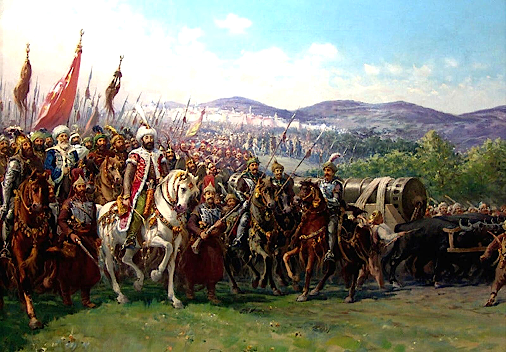
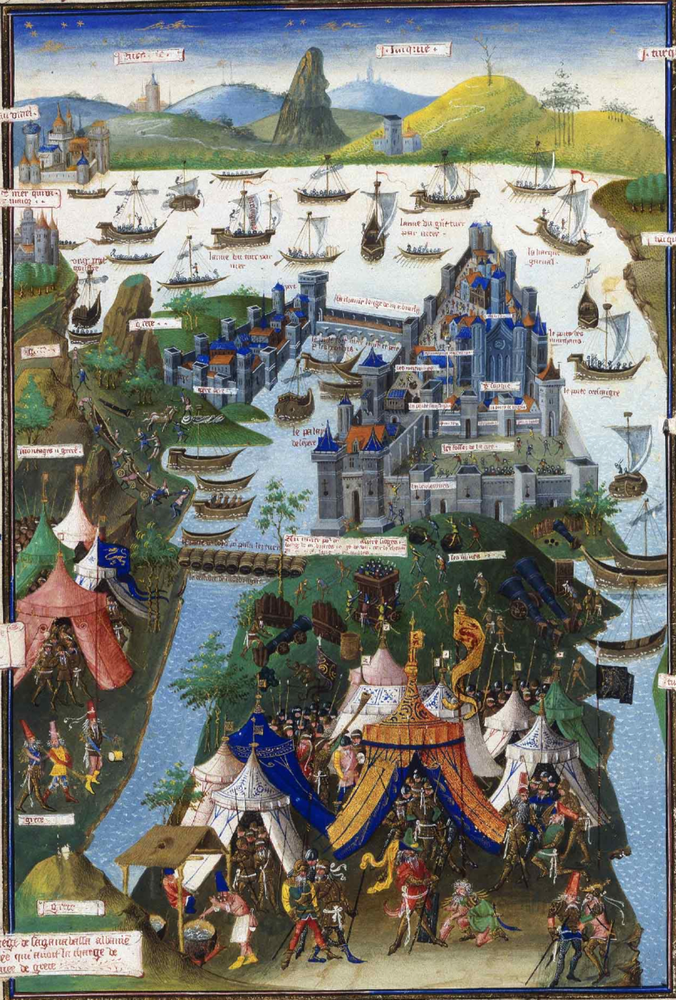
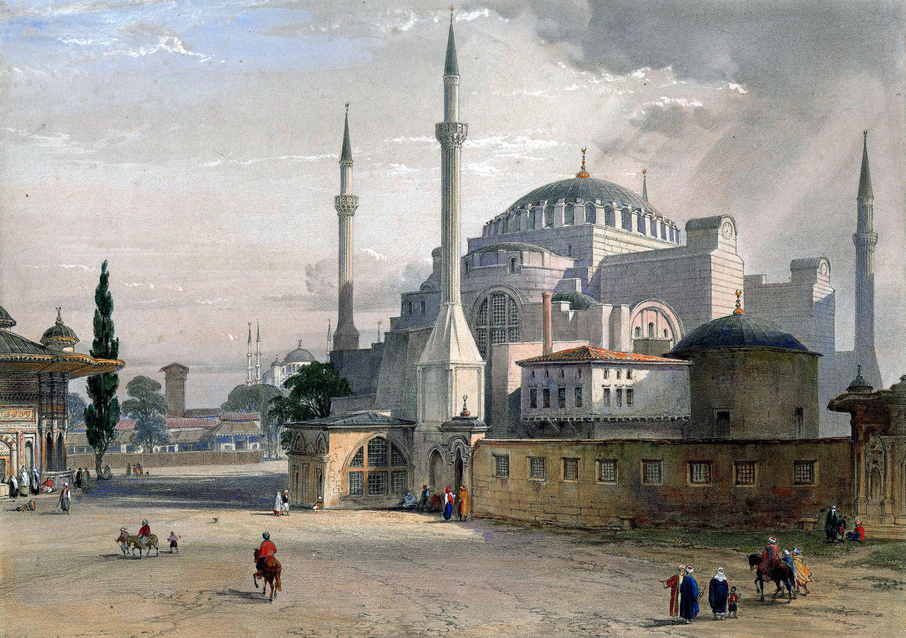
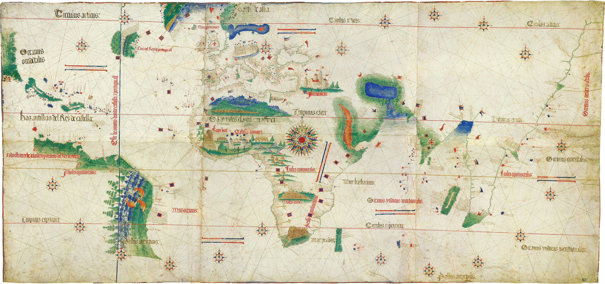

Pada 29 Mei 1453, setelah 53 hari pengepungan (sejak 6 April), Konstantinopel — ibu kota Kekaisaran Bizantium — jatuh ke tangan Kesultanan Utsmani. Komandan penakluknya: Sultan Mehmed II, berusia 21 tahun. Kota yang dilindungi Tembok Theodosius selama ±800 tahun itu runtuh oleh bubuk mesiu. Bagi banyak sejarawan, hari itulah akhir Abad Pertengahan — dan awal era modern. Termasuk awal dari rantai peristiwa yang, 58 tahun kemudian, membawa bangsa Eropa ke Nusantara.

Anak 21 Tahun vs Tembok 800 Tahun
Mehmed II lahir 30 Maret 1432 di Edirne. Ia naik takhta untuk kedua kalinya pada Februari 1451 — umur 19 tahun — dan langsung menyiapkan satu obsesi: Konstantinopel. Dua tahun persiapan: memperkuat armada, membangun benteng Rumeli Hisarı di selat Bosporus untuk memutus bantuan dari laut, dan memesan senjata yang belum pernah ada sebelumnya.
Di dalam tembok, Kaisar Konstantinus XI Palaiologos memimpin pertahanan dengan ±8.000 orang (termasuk tentara bayaran Genoa dan Venesia) melawan pasukan Utsmani yang berkali-kali lipat lebih besar (perkiraan 50–100 ribu; angka pasti bervariasi antar-sumber). Mereka percaya diri: Tembok Theodosius — berlapis tiga, menara, dan parit — sudah menahan puluhan pengepungan selama delapan abad. Kenapa kali ini harus beda?
Karena kali ini, yang datang bukan sekadar tentara. Yang datang adalah teknologi.
Meriam yang Ditolak Pembeli Pertamanya
Namanya Orban (disebut juga Urban) — insinyur dan pengecor besi asal Brassó, Transylvania (kini Brașov, Rumania). Pada 1452, setahun sebelum pengepungan, Orban menawarkan jasanya dulu ke Bizantium. Kaisar Konstantinus XI menolak — bukan karena tak butuh, tapi karena tak sanggup membayar gajinya dan tak punya materialnya. Orban pun menyeberang ke kubu lawan.
Mehmed memberinya dana dan material melimpah. Dalam 3 bulan di Adrianople (Edirne), Orban mengecor meriam raksasa Basilica: ditarik 60 ekor lembu menuju Konstantinopel, menembakkan bola batu ±500 kg sejauh ±1,5 kilometer. Orban mengklaim senjatanya bisa menghancurkan "tembok Babilonia sekalipun" — dan Tembok Theodosius membuktikan klaim itu bukan sesumbar. Retakan demi retakan tak sempat diperbaiki pembela; tiap malam mereka menambal dengan puing, tiap pagi meriam kembali menyalak.
Catatan redaksi: kisah Orban tewas akibat meriamnya sendiri yang meledak hanya muncul di satu sumber sekunder ("is said") — kami tidak menyajikannya sebagai fakta.
Peninggalan Orban bertahan lama: Meriam Dardanelles (1464) — koleksi Royal Armouries Inggris — dibuat berdasarkan bombard-nya. Satu insinyur yang ditolak karena "kemahalan", mengubah sejarah militer dunia.
Rantai, Tanduk Emas, dan Kapal yang "Berlayar" di Darat
Konstantinopel nyaris tak bisa diserang dari laut. Mulut Tanduk Emas — teluk pelabuhan alami terbesar dunia, markas angkatan laut Bizantium — dijaga rantai besi raksasa yang dibentangkan dari kota ke Menara Galata. Armada Utsmani tak bisa masuk.
Mehmed mencoba menjebol rantai dengan kekerasan. Gagal. Maka pada 22 April 1453 ia melakukan sesuatu yang terdengar mustahil: memerintahkan puluhan kapal perang (±67–72 antar-sumber) diseret lewat darat — diangkat dari Bosporus, ditarik naik bukit di belakang Galata di atas rel kayu yang dilumuri lemak hewan, lalu diturunkan ke Tanduk Emas. Semalaman, dari sekitar pukul 18.00 hingga 06.00 pagi. Para awak bahkan mendayung dan meniup terompet seolah sedang berlayar, sementara layar terkembang ditiup angin.
Pagi harinya, Bizantium terbangun dan melihat armada musuh sudah di dalam teluk. Rantai raksasa itu — simbol pertahanan laut yang dibanggakan — mendadak jadi pajangan. Utsmani lalu membangun jembatan apung, dan pembela terpaksa membagi pasukan tipis mereka ke dua front.

Catatan redaksi: trik kapal lewat darat ini ternyata bukan ide orisinal Mehmed. Abad ke-10, bangsa Rus Kiev pernah menyeret kapal melewati Galata dengan cara yang sama (mereka lalu dikalahkan Bizantium dengan api Yunani); dan pada 1204 kapal Venesia menjebol rantai itu dengan pendobrak saat Perang Salib IV. Mehmed mengulang taktik lama — dengan eksekusi yang sempurna.
Hagia Sophia: Simbol yang Berganti Tuan
Hagia Sophia — selesai 537 M untuk Kaisar Justinian — adalah katedral Kekristenan Timur selama ±900 tahun, gereja berkubah terbesar di dunia yang dikenal manusia. Pada 29 Mei 1453, Mehmed II memasukinya, melaksanakan shalat Jumat dan khutbah di dalamnya. Seorang ulama naik ke mimbar dan mengumandangkan syahadat: bangunan itu resmi menjadi masjid.
Mehmed tidak merobohkannya. Ia memasang mihrab menghadap Mekah, menutup mosaik-mosaik figur, mendirikan menara — dan menjadikan Ayasofya masjid kekaisaran, simbol kesinambungan dari Romawi ke Utsmani. Pilihan yang disengaja: dengan shalat di bawah kubah terbesar dunia, ia mengklaim wibawa kekaisaran lama untuk kekaisaran baru — bahkan mengklaim gelar kaysar-i Rum, Kaisar Romawi.

Catatan redaksi: hari penaklukan adalah hari yang kelam bagi warga kota. Terjadi penjarahan; warga yang berlindung di Hagia Sophia menjadi korban — yang tua, sakit, dan luka banyak yang tewas, sisanya diperbudak. Kami tidak merinci kekerasannya; para korban kami hormati sebagai manusia, bukan angka.
Rantai ke Nusantara: 1453 → 1511
Inilah bagian yang jarang disadari: jatuhnya Konstantinopel adalah salah satu alasan kapal-kapal Eropa akhirnya sampai ke Indonesia.
Versi yang diajarkan di banyak buku pelajaran begini: Utsmani menguasai Konstantinopel → memonopoli jalur dagang darat, memungut pajak dan menaikkan harga → rempah jadi mahal → Eropa terpaksa mencari jalur laut langsung ke Asia. Ada benarnya — tapi tidak sesederhana itu, dan kami tidak akan menyederhanakannya.
Yang benar, versi jujurnya: pertama, Portugis sudah berlayar sebelum 1453 — ekspedisi sistematis menyusuri Afrika dimulai 1419 di bawah Pangeran Henry sang Navigator (Ceuta direbut 1415). 1453 bukan titik nol. Kedua, Utsmani tidak pernah menutup total perdagangan Timur — dagang via pelabuhan Utsmani terus berjalan, Venesia tetap berdagang dengan mereka; kendali penuh Utsmani atas rute Laut Merah baru terjadi 1517, setelah Portugis mencapai India. Klaim "jalur darat ditutup total pada 1453" adalah mitos.
Jadi apa peran 1453 yang sebenarnya? Pendorong dan akselerator. Kendali Utsmani atas simpul dagang itu menambah urgensi ekonomi, memperkuat insentif, dan memberi legitimasi politik bagi proyek penjelajahan yang memang sudah berjalan. Rantai tanggalnya nyata:
1488 — Bartolomeu Dias mencapai Tanjung Harapan, masuk Samudra Hindia. 1498 — Vasco da Gama tiba di Calicut, India (20 Mei 1498): rute laut langsung Eropa–Asia terbuka. 1510 — Afonso de Albuquerque merebut Goa. Agustus 1511 — Albuquerque merebut Malaka dengan ±900 Portugis dan 200 tentara bayaran India, menaklukkan kota yang baru berumur sedikit di atas seabad (didirikan ±1400 oleh Parameswara).
Motivasi raja Portugal jelas: merebut perdagangan rempah yang sangat menguntungkan dari tangan Muslim yang memonopolinya, dan membuka rute via Tanjung Harapan untuk cengkih, pala, fuli, permata, dan emas. Tomé Pires — yang bertugas di Goa dan Malaka — menulis kalimat yang merangkum semuanya:
"Whoever is lord of Malacca has his hand on the throat of Venice." — Tomé Pires
Malaka adalah titik kumpul rempah dari Maluku, sutra dan porselen China — semua yang selama ini hanya sampai ke Eropa lewat tangan pedagang Venesia. Dan Portugis tidak berhenti di Malaka: November 1511, ekspedisi António de Abreu dan Francisco Serrão berlayar ke Kepulauan Banda — satu-satunya tempat di Bumi saat itu tempat pala dan fuli tumbuh — dan kembali Desember 1512 dengan tiga kapal penuh rempah.

Jadi: 1453 → 1511 → Banda. Satu kota jatuh di ujung Eropa; 58 tahun kemudian, bendera Portugis berkibar di Malaka; setahun kemudian kapal mereka mencapai satu-satunya sumber pala dunia. Rempah Nusantara yang hari ini ada di dapur kita — jejak jalurnya dibuka oleh kejatuhan sebuah kota 5.700 kilometer jauhnya.
Analisis: Dibaca Pakai Lensa Ketahanan Nasional
1. Chokepoint = kekuasaan. Siapa menguasai selat dan jalur dagang, dia mengatur harga dan nasib bangsa lain. 1453 membuktikannya: kendali atas satu simpul dagang memaksa seluruh Eropa mengubah strategi puluhan tahun ke depan. Indonesia duduk di Selat Malaka — chokepoint tersibuk di dunia. Pelajaran 1453: jangan jadi penonton di selat sendiri.
2. Ketergantungan pada satu jalur adalah kerentanan. Eropa abad ke-15 menggantungkan pasokan rempahnya pada jalur darat via Konstantinopel; begitu simpul itu dikuasai pihak lain, krisis. Ketahanan = diversifikasi jalur, pasokan, dan mitra — prinsip yang berlaku dari rempah abad ke-15 sampai rantai pasok chip abad ke-21.
3. Teknologi menulis ulang peta kuasa. Bubuk mesiu meruntuhkan tembok yang 800 tahun dianggap abadi. Siapa menguasai teknologi disruptif, dia yang menentukan aturan main berikutnya. Tembok Theodosius adalah "firewall" abad pertengahan; meriam Orban adalah "zero-day exploit"-nya.
Arsip & Referensi
Angka dan peristiwa di artikel ini diverifikasi silang dari sumber-sumber berikut:
- Wikipedia — "Fall of Constantinople", "Siege of Constantinople (1453)", "Mehmed II", "Orbán (ironmaster)", "Hagia Sophia", "Haliç (Golden Horn)", "Portuguese discoveries", "Gunpowder artillery in the Middle Ages" (linimasa & angka, diverifikasi silang).
- HistoryNet — "Enter... The Giant Cannon" (meriam Orban, ±8.000 pembela).
- Travels Through Time (podcast) — "The Seizure of Constantinople, 1453" (Orban, rantai & kapal darat 22 April).
- Academia.edu — "The Golden Horn Chain" (detail rute kapal darat: 67 kapal, Dolmabahçe → Kasımpaşa).
- Erenow / The Crusades — "Constantinople, Siege of (1453)" (72 kapal, 22 April).
- Istanbul Insider — "The Golden Horn of Istanbul" (rantai; taktik Rus & Venesia).
- Museum Pass Istanbul — "Hagia Sophia Timeline" (konversi 29 Mei 1453).
- EBSCO Research Starters — "Melaka Falls to the Portuguese" (Agustus 1511; motivasi raja Portugal).
- Britannica — "Portugal: Control of the sea trade" (Goa 1510, Malaka 1511).
- Aramco World — "The Coming of the Portuguese" (kutipan Tomé Pires; Malaka 1511).
- portuguese.asia — "Historical presence of the Portuguese in Indonesia" (ekspedisi Banda 1511–1512).
- EBSCO Research Starters — "Vasco da Gama Rounds the Cape of Good Hope" (Dias 1488; da Gama 20 Mei 1498).
- Museo Galileo — "The Circumnavigation of Africa" (Dias & da Gama).
- Medievalists.net — "Mehmed II in Byzantine short chronicles" (usia 21; citra kontemporer).
Kredit foto arsip: lukisan Zonaro 1903 — Fausto Zonaro (via Wikimedia Commons), public domain; miniatur Le Tavernier pasca-1455 — via Wikimedia Commons, public domain; litografi Hagia Sophia 1852 — Fossati/Haghe (via Wikimedia Commons), public domain; Planisfer Cantino 1502 — via Wikimedia Commons, public domain.
Catatan redaksi: angka pasukan & korban hanya tersedia sebagai perkiraan/rentang antar-sumber — kami tidak menyajikan angka bulat. Klaim "jalur darat ditutup total oleh Utsmani pada 1453" adalah penyederhanaan berlebihan dan tidak kami pakai; yang kami sajikan: 1453 sebagai pendorong/akselerator di samping faktor teknologi, persaingan Iberia, dan eksplorasi yang sudah berjalan sejak 1419. Kematian Orban akibat ledakan meriamnya tidak terverifikasi (satu sumber) dan tidak kami sajikan sebagai fakta.
Satu kota jatuh, satu benua mengubah rute — dan Nusantara masuk peta dunia. Versi ringkasnya ada di Instagram & TikTok @jejakkuasa — follow biar nggak ketinggalan titik balik berikutnya.